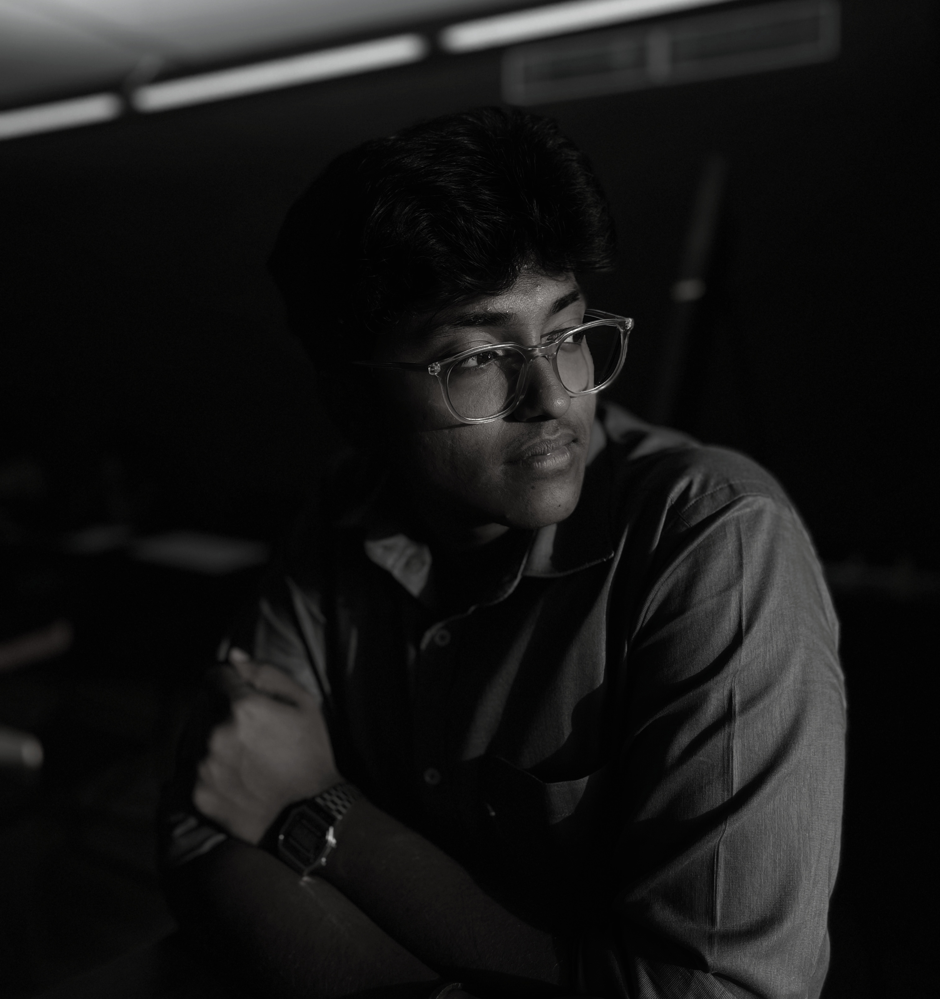

Implementation and Solution Support Engineer with 2+ years of experience in system implementation, incident response, and enterprise solution support. Holding a Bachelor of Engineering in Electronics and Communication Engineering, with a strong foundation in systems architecture, networking, and analytical problem solving. A driven cybersecurity enthusiast with practical industry exposure and a research-oriented mindset, committed to advancing expertise at the intersection of engineering and cybersecurity.
Developed a system to identify and localize unmanned aerial vehicles using acoustic signatures. Contributed across signal processing, hardware configuration, algorithm development and testing.
Designed an assistive device to reduce hand tremors for people living with Parkinson's disease using counter motion mechanics, improving ease of daily activities.
Active participant in Capture The Flag competitions. Reached the finals of Pecan+ PALS CTF conducted at IIT Madras, competing against teams from across the country.